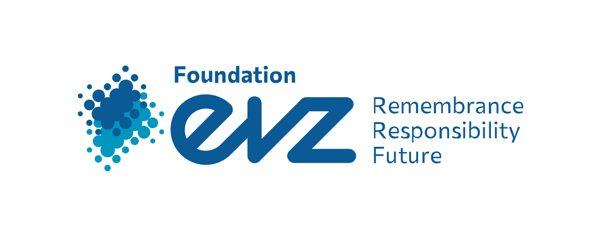

01
WHO REMEMBERS GRANDMA KANSAS?
Who remembers Grandma Kansas? This project begins with a family question and with the limits of the official record.
Family Archives · Black American History
A Black family ancestor survives in remembered stories and a fragmentary census record. What can family memory preserve when the official archive falls silent?
Introduction
“Who remembers Grandma Kansas?” begins as a family question and becomes an inquiry into the limits of official records.
Deborah D. Jenkins traces an ancestor whose name survives in a US census and in her Black American family’s intergenerational memory, but whose later life has not been recovered from the records she searched. The project does not invent a missing biography. It asks what families can know when institutions preserve only fragments.
01 · The search
The search begins with an official trace—and with what the researcher cannot find after it. This distinction between missing documents and a missing person drives the story.
Who remembers Grandma Kansas? This project begins with a family question and with the limits of the official record.
The census gives us a trace: a name, a household, a place in an official record.
In the record, Kansas appears as part of a family and a community. The document preserves a fragment of her life.
There she is in the record: Kansas.
And then she disappears from the records I could locate.
Where did Kansas go? That question became the beginning of the search.
I went looking for her: census records, family records, death records, the archives. And I found nothing that completed the story.
But absence is not the same as nonexistence. Sometimes the archive is simply unfinished.
02 · Family memory
Family testimony carries a name across generations when the documentary record falls silent.
But my family remembered. They called her Grandma Kansas.
Memory became the record: a name, a relationship, a story passed down. Not everything we inherit comes with a citation.
So who gets to decide what counts as evidence? The census? The archive? The institution? The family? Who owns memory when the archive is incomplete?
What is missing from the record may still live in memory. Recovery begins when we treat families and communities not merely as subjects of history, but as keepers of it.
03 · Unframed archives
The story then moves beyond a single ancestor to the forms of evidence preserved in households, churches and communities.
Grandma Kansas is not an exception. Black history is filled with people who lived, loved, worked, built, resisted—and left only fragments in the official record. The question is not only what the archive contains, but what we have been taught not to recognize as an archive.
History does not live only in repositories. It can live in a family photograph, a handwritten recipe or notebook, an open Bible, or a grave marker. These ordinary objects can carry extraordinary memory.
An archive can be inherited without ever being catalogued: objects, stories, photographs, rituals, places. What changes when communities name their own evidence?
Preservation is not neutral. Who has the resources to save? Who has the authority to name? Whose materials enter institutions? Whose materials remain in homes, churches, attics, and memory? And what happens when the people holding the memory are gone?
Families remember. Churches remember. Neighborhoods remember. Communities remember. They preserve what institutions overlook, misname, or never collect. What might your community know that the archive does not?
04 · Recovery
Recovery is not only finding more documents. It also changes which records, objects and voices are recognised as evidence.
To recover a name is to challenge disappearance. To recover a story is to challenge erasure. To preserve memory is to refuse forgetting. Recovery does not merely add people to the archive. It changes what we understand the archive to be.
Memory can be incomplete. Memory can be contested. Memory can change across generations. So can the archive. The question is not whether memory is perfect. The question is whether we are willing to listen to what it preserves.
A photograph tucked into a Bible. A recipe written in somebody’s handwriting. A funeral program saved in a drawer. A story repeated at the kitchen table. These are not merely keepsakes. They are evidence.
So I return to the question with which I began: Who remembers Grandma Kansas? We do. Not because the archive told us to remember her. Because somebody refused to forget her. And generations later, that memory gave me enough to go looking.
And that is why the archive isn’t finished. There are still names to recover. Stories to hear. Photographs to identify. Objects to understand. And memories waiting for someone to ask the right question. So I want to leave you with one: Who is missing from yours? Go looking.
Curatorial note
The author distinguishes a documented census appearance from the family account passed down afterward. The absence of a trace in records she consulted does not establish what happened to Kansas; this edition does not fill that gap with speculation. The accompanying narration is the author’s approved guide, so wording may differ slightly from her video recording.
Deborah D. Jenkins. The family story, interpretation, narrative and recorded narration are her own.
The complete 22-part authored narration guide appears above. The supplied companion document states that the final video contains open captions.
The contributor discloses that ChatGPT was used for organisational, language, presentation-production and accessibility support, including synchronising the author’s narration. The author retained responsibility for the historical claims and the final work; AI was not used as genealogical evidence.
Who Owns Memory?
Democratic Participation in Digital Public History
Many stories. Many voices. One shared future.
whoownsmemory@gmail.com
www.whoownsmemory.org
Stay updated
